Hot Chips是斯坦福三天芯片会议，架构师在此公布最新设计：从内存、CPU、GPU、网络到定制加速器。它直接给出最重要公司的路线图，决定组件需求，今年内存尤为突出。本篇把三份日报按主题整合成完整分析。
一线视角的全中文编译：6条缓解内存带宽的方案、5个对主机CPU的答案、机架级吞吐-交互曲线取代单芯规格成为记分牌。25张关键图表全部还原。
Hot Chips是在斯坦福大学举办的为期三天的会议，行业芯片架构师在此展示其最新设计，涵盖内存、CPU、GPU、网络及定制加速器，从电气与计算机工程角度出发。每天主题各异：第一天为内存，第二天为处理单元，第三天为系统、网络及定制硅。
芯片设计会议为何对市场重要？它详述了该领域最重要公司的路线图，直接影响竞争定位，尤其在无晶圆厂层面。更深一层，这些路线图决定了特定硬件组件的需求，而今年内存需求尤为突出。内存短缺从一开始就是焦点问题。内存现已占AI机架成本的约70%，每位演讲者都在围绕这一数字进行设计。
我将三天的简报整合为完整版本，按主题而非日期分组：先内存，再CPU，接着GPU机架，然后是网络层，最后是超大规模企业和初创公司的定制硅。每场演讲，我提炼其核心论点及支撑的技术内容，并在每个主题末尾总结影响。文末，我将整个会议要点汇总为关键收获。
内存日以一场教程开场，随后6家不同公司展示了6种解决同一问题的不同方案。问题在于，AI算力大约每两年增长3倍，而HBM带宽增长不足2倍，因此GPU运算速度与内存供给速度之间的差距持续扩大。内存日上的每个演讲都是对这一差距的不同解答，且都共享一个举措，即将计算移至数据所在之处。
高带宽内存之所以带宽高，是因为其高度并行。普通DDR5模块通过64位总线与CPU通信，而HBM堆栈则通过1,024条线路（HBM4上为2,048条）与GPU通信，每条线路的速率大致相同。整个带宽优势源于宽度，而宽度来自将DRAM芯片层层堆叠，并穿透数千个垂直连接（称为硅通孔TSV）直达与GPU通信的基础芯片。
这种并行性是有代价的。为容纳所有这些连接，芯片需要更大，这也是HBM在相同比特数下占用约3倍于DDR芯片面积的部分原因（并非全部）。美光的演讲者给出了具体数字：相较于DDR5，架构、先进封装和制造复杂性的综合开销使HBM3E每比特容量消耗约3倍多的硅。每一片HBM晶圆都意味着有一片普通DRAM晶圆未能生产，这是短缺的重要原因。
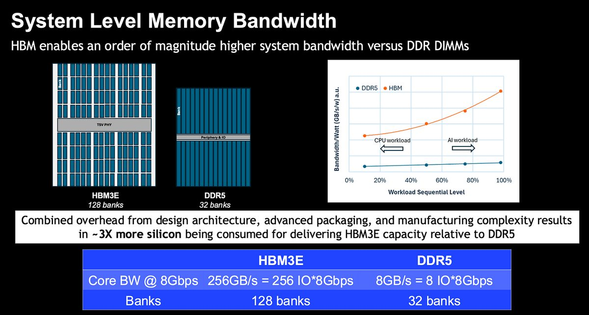
第二个代价是热量。冷却装置位于堆栈顶部，但产生大部分热量的基础芯片却位于最底部，因此热量必须向上穿过8至16层DRAM才能到达冷板。DRAM不耐热，因为高温下电池漏电更快，需要更频繁的刷新，因此在架构热量集中的地方，可靠性恰恰会下降。
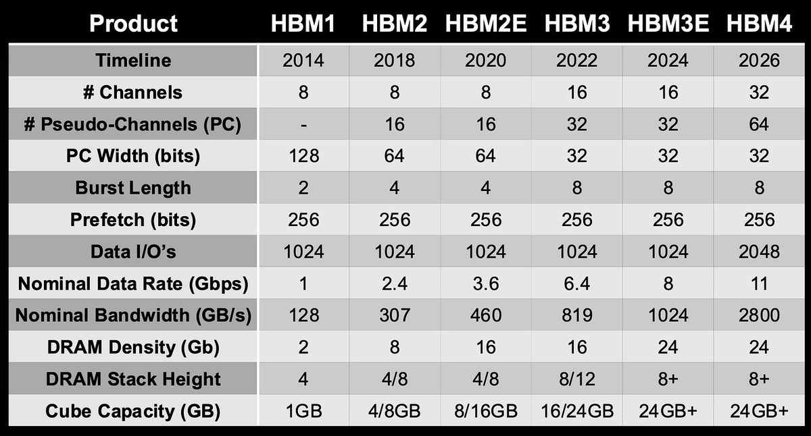
HBM规格随时间演变：
三星的演讲主张HBM基础芯片应成为计算元件而非被动路由器，这一论点恰好需要先进逻辑代工厂，而三星正好拥有。存内计算的大致思路是：如果能在基础芯片上完成部分计算，就无需将那么多数据从HBM发送到逻辑芯片。在复杂数学问题中，不必在内存和处理器之间来回发送整个初始问题，如果内存能先得出中间解，只需传输该中间解，从而大幅减少I/O。
这一点之所以必要，是因为算力增长快于HBM带宽。推理分为两个阶段：预填充（模型读取整个提示）和解码（逐词生成）。解码受内存带宽限制，因为生成每个词都意味着从HBM重新读取模型权重和对话的工作记忆（KV缓存），因此不断扩大的差距恰好落在最关键阶段。减少数据传输还有助于降低功耗需求，进而改善热性能，因为移动比特本身就消耗大部分能量。
如今的HBM基底芯片（base die）仅是一个被动路由器，三星的主张是它可以承担更多工作。目前它负责与计算芯片（PHY）的通信通道以及DRAM堆栈的测试功能。三星的路线图分三个阶段推进。第一阶段从HBM4开始，将基底芯片从DRAM工艺迁移至4nm逻辑工艺，将PHY（芯片上专用于与GPU通信的物理I/O接口部分）缩小为一个小型die-to-die接口，并将内存控制器从GPU上卸载，从而释放GPU面积用于计算。第二阶段在释放出的空间上增加功能：RAS传感器和自测、通过基底芯片直接路由的外部内存连接，以及最终在基底芯片内部执行计算的处理器元件。第三阶段则是完整的3D集成。
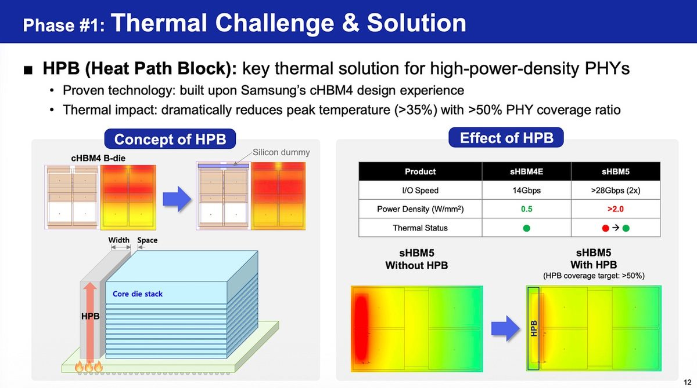
这也使HBM成为更加定制化、更少同质化的产品，这正是工程讨论背后的战略要点。这对三星极为有利，因为它拥有自己的先进逻辑代工厂，无需像SK海力士（hynix）和美光那样向台积电（TSMC）争取产能分配，而这两家同样生产HBM。领先的逻辑基底芯片还能降低功耗。
挑战依然来自基底芯片上逻辑电路更高功率密度所产生的热热点。而他们实际上提出了一个相当巧妙的解决方案。PHY是发热源，且PHY位于芯片侧面。那么为何不从侧面而非顶部散热？他们展示了一个沿堆栈侧面延伸的散热路径块（他们称之为HPB），目标覆盖率超过50%，其模拟结果显示它能将sHBM5的热图像从红色拉回绿色。
我仍记得MR-MUF曾是SK海力士护城河论点一部分的日子。SK海力士目前在HBM4中实际使用的是TC-NCF，这正是MR-MUF护城河论点所针对的竞争性键合技术。该演讲对HBM4的制造流程做了全面概述：每个堆栈2,048个I/O、超过20,000个TSV、16,148个基底芯片微凸点，以及从TSV形成到微凸点、晶圆减薄和芯片堆叠的完整工艺流程。
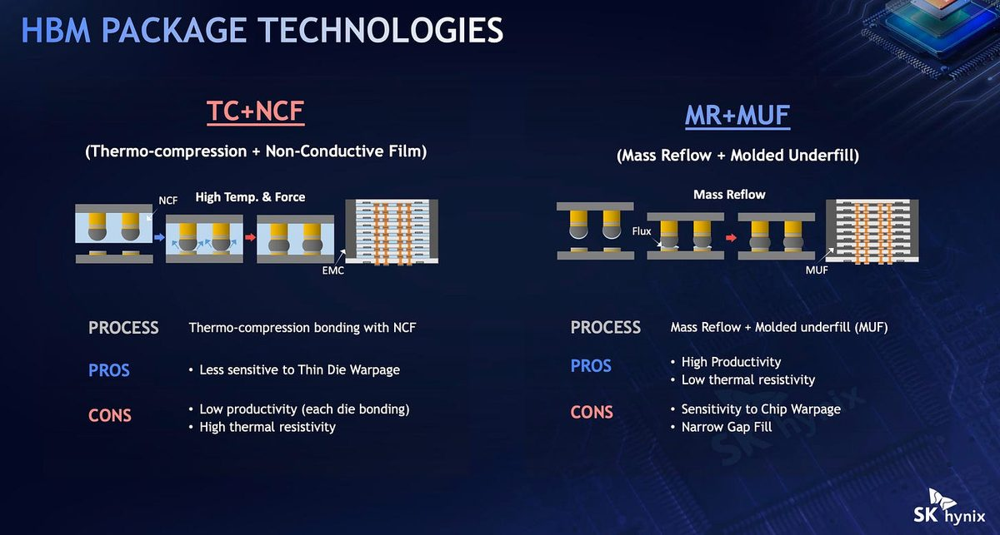
我认为这次演讲中并没有太多全新内容。这些是他们自2023年以来一直在做且做得不错的事情。值得玩味的是键合技术的变更对未来道路的启示。每一代产品都在增加TSV和凸点，同时缩小它们之间的间距，而每一步都提高了下一代的难度。本周展示的每条路线图最终都指向混合键合，而当前护城河技术在路线图中途被替换，说明在特定键合节点上，任何厂商的工艺优势都无法持久。
这次演讲让大会上最激进的内存构想听起来理所当然。SRAM（计算芯片上自带的快速内存）速度极快但体积过大且成本过高：一个6T SRAM单元比DRAM单元大10倍，在GB规模下泄漏数十瓦功耗，每比特成本约为DRAM的100倍，且每对显卡最高仅约4GB。HBM容量出色，但带宽已不再足够，即使在HBM4上每个封装的实际极限也约为20 TB/s，因为可放置的堆栈数量受限于GPU芯片的"滩头"（beachfront），即可用于连接的物理边缘长度。
d-Matrix的解决方案是将计算直接堆叠在内存之上，他们称之为3D DRAM。它具备高带宽，因为没有滩头限制（连接通过芯片整个表面向下延伸而非绕行边缘），同时由于底层仍是DRAM而具备高容量。其Raptor chiplet将逻辑芯片置于顶部、DRAM置于下方，数据令人惊叹：SRAM级带宽，I/O能耗约为HBM的1/10，每芯片约100 TB/s，且无需PHY、无横向数据传输。
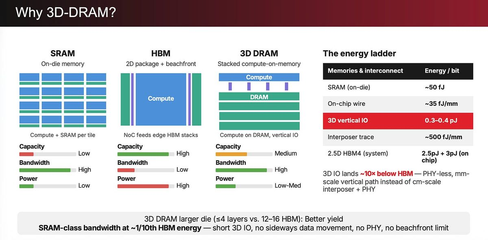
推理的大部分墙钟时间都花在解码上，因此这直接针对昂贵的阶段。其卖点是3D DRAM等于快速推理且不会让你破产：他们的对比表显示每mm² 硅片的带宽为32.6 GB/s，而HBM4系统为1.4-1.7，每GB/s功耗为2.96 mW，而HBM为40。
吸引力在于简单性：当行业其他部分追求更复杂的出路时，d-Matrix将逻辑直接堆叠在DRAM上：最多4层（比12-16层HBM堆叠的良率更好），且无需混合键合。
HBF的演讲是存储日的系统现实检验。HBF堆叠NAND的方式与HBM堆叠DRAM相同，在相同成本下提供8-16倍的HBM容量，演讲者（OXMIQ和PRAXMATI，基于SanDisk对齐的规范）花了整个会议时间讨论这种权衡何时真正胜出。人们真正关心的是 $/token而非 $/GB，因此必须考虑带宽和延迟的权衡，这大约比HBM差25倍。
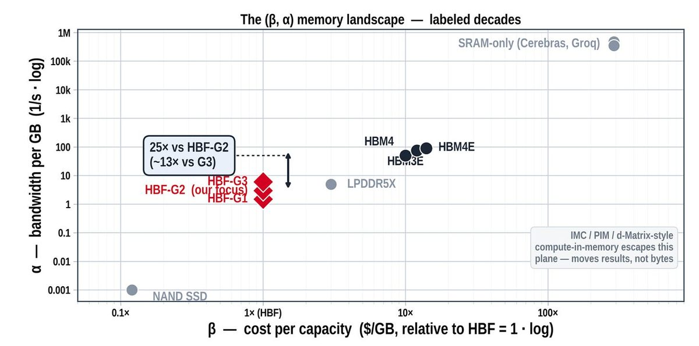
当你有高批量大小（同时服务许多用户请求，这是吞吐量的来源）和高交互性（快速推理）时，内存带宽成为瓶颈。这两者相互权衡，而每当你推动这一权衡的前沿时，带宽就是限制因素。
当你推动这一前沿时，HBF有大量未使用的容量，其带宽上限限制了性能。他们自己的机架计算诚实地展示了这一点：全HBF GPU携带4,096GB，而纯HBM为288GB，但随着批量大小增加，有效带宽从19 TB/s衰减到4 TB/s。因此HBF在低批量、低带宽需求场景中有用，在这些场景中可以用更少的GPU服务相同的token并真正填满容量。考虑小型个人、本地或私有企业部署，而非大型机架。
另一个有趣的用例是专家并行，其中混合专家（MoE）模型的专家（大型前馈块，持有大部分权重，每个token只使用其中少数几个）分布在不同的GPU上。HBF在这里表现出色，因为更多专家可以放在同一位置，从而减少了专家并行通常需要的跨GPU通信。
我进入时对HBF持乐观态度，出来时略微不那么乐观且更加现实。SanDisk的投资者日展示了最大化的案例，而会议版本恢复了带宽权衡。让我保持建设性的是成熟度差距：考虑投入到HBM生态系统中的研发量对比HBF，后者处于第一代。在软件和系统设计成熟之前，今天存在的少数利基用例，预示着三年后权衡的走向。而采用将不成比例地推动NAND需求，因为交换比率巨大。HBF需要SLC而非TLC（每比特3倍的晶圆），然后像HBM一样堆叠，这导致其替代的NAND消耗倍数约为9倍。
第3天继续以存储为主题的演讲，三星进行了第二次存内计算演讲，这种坚持是合理的：三星是唯一能端到端实现这一点并获取收益的存储制造商。演讲以会议图表开场：内存（主要是HBM）在AI芯片组件成本中的占比从2024年第一季度的52% 增长到2025年第四季度的63%。向满屋的系统设计师展示这张图表，每个人听到的都是同一件事：最大的成本线是需要通过工程手段消除的那条。
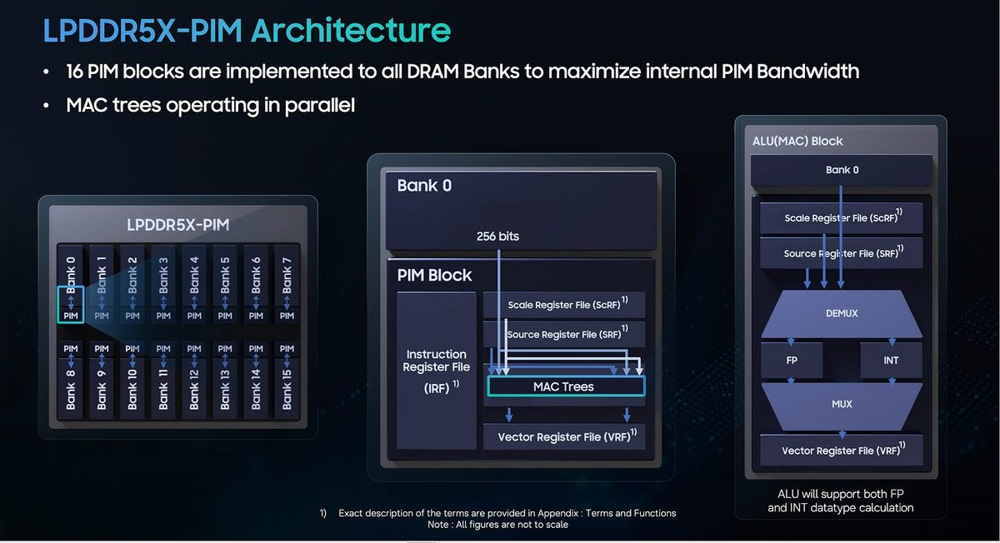
这里的PIM指的是每个DRAM存储库旁的小型逻辑块，这次位于LPDDR5X内部而非HBM。存储库并行向逻辑块供数，支持LPDDR5X外部接口8倍的内部带宽，且由于处理紧邻存储库，只需将真正需要送往主处理器的数据回传。
该方案同时适用于服务器和边缘场景，小模型推理中GEMV密集的部分可在内存内部完成。虽然不清楚三星此类模块的具体成本，但其潜力显而易见，尤其适用于低批量工作负载：这类场景下完整GPU性能过剩，而内存总线成为全部瓶颈。
与三星联合发布的MX1将近内存逻辑再向外推一层，置于CXL扩展总线上。CXL是内存池化技术，可提升利用率并任意扩展容量。MX1是Type 3 CXL设备，承载高达2TB的DDR5，其后挂载SSD，软件将其视为真实内存而DRAM充当缓存。他们称之为无限内存，这对NAND是利好，因为通过解决部分延迟问题，NAND得以进入DRAM的内存层级。
近内存计算部分更有意思。MX1搭载3,072个小规模RISC-V核心，使其成为一台TFLOPS远不及GPU（总计约3 TFLOPS）的CPU，却能以GPU方式编程，支持kernel、任务和map风格运行时。
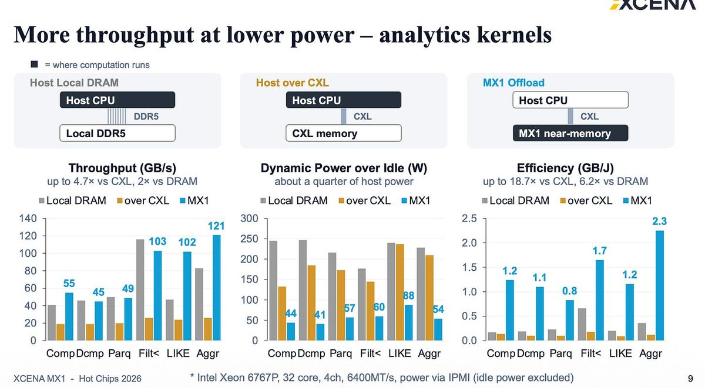
这些核心的意义在于数据所在之处进行数据缩减。从主机本地DRAM运行分析可获得基线吞吐。将数据移至普通CXL内存后吞吐骤降，因为每个字节都要穿越链路。改为在MX1上运行计算，吞吐回升至超过本地DRAM基线，功耗仅为主机的四分之一，因为穿越链路的只有结果而非原始数据。
LLM演示最值得关注：KV cache注意力在MX1设备池上计算，而非将缓存送往GPU，在100K上下文下解码吞吐提升3.35倍。硬件规模尚小，数据处于实验室级别，但架构方向正确。
内存日展示了5种方案：HBM基础die上的逻辑、堆叠在DRAM上的计算、类HBM堆叠的NAND、LPDDR存储库内的逻辑、以及CXL扩展器上的RISC-V核心。这是来自行业5个不同角落的5种不同押注，却指向同一论点：移动数据的成本高于在数据上计算，因此计算必须向数据靠拢。无人协调这一切。当行业每个参与者独立收敛于同一架构方向时，该方向即为定局，资金随之涌入。
短期内，这里展示的所有技术距离量产还需2-4年，因此均无法缓解当前推动DRAM和NAND重新定价的短缺。期间3倍（HBM）和9倍（HBF）的贸易比率持续收紧大宗存储芯片供应。长期来看，这一技术队列旨在压缩内存开支。
第二天聚焦于处理单元，涵盖中央处理器和图形处理器。当天的CPU部分实际上是一场辩论：GPU旁边的主机处理器应该是什么？Agentic（智能体原生）工作负载改变了这个问题，因为智能体链是模型调用、工具调用和编排步骤的串行序列，CPU处于每个环节的关键路径上。6家公司给出了6种不同答案，它们之间的差异是我10年服务器CPU生涯中见过最大的。
IBM正在进入Arm生态系统。下一代大型机处理器采用双ISA设计：在同一核心上以硬件原生执行z/Architecture和Arm v9.3。该核心按Arm标准来看规模巨大，采用2nm工艺，频率达5.7+ GHz，并配备大型机惯有的大容量缓存，因此作为Arm CPU能提供非常高的单核性能。这是下一代产品，短期内不会上市。
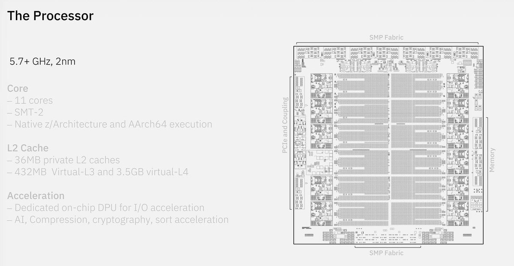
大型机数十年的结构性问题是软件生态系统不断萎缩，而原生运行Arm Linux（并将Z系列加密和AI加速器开放给Arm侧）直接针对这一问题。他们还展示了下一代Spyre AI加速卡，配备96GB HBM3E，带宽4 TB/s，面向企业推理场景，如今连大型机也带上了HBM条目。
Wildcat Lake是面向台式机和笔记本电脑的客户端CPU，而非数据中心产品。它已于今年早些时候以Core Series 3的名义发布，本次演讲聚焦于其构建方式，结果比芯片本身更有趣。Wildcat Lake是Panther Lake的性价比衍生版本，采用18A工艺制造，整个项目围绕成本削减展开：将Foveros硅中介层（芯片下方的硅片，用于在封装到一起的独立小芯片之间路由信号）替换为廉价的有机封装，将GPU、NPU和内存总线缩减至主流规模，计算芯片面积减少38%，I/O芯片面积减少15%。
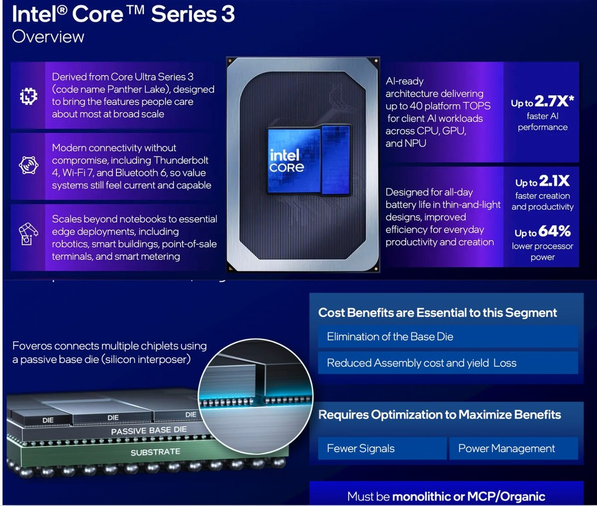
真正的创新在于在该廉价有机封装上使用UCIe（开放的小芯片间互连标准），据Intel称此前从未有主流客户端CPU采用过。该接口比Foveros版本大70%，但他们仍然接受了这一取舍，因为取消中介层足以弥补成本。
Vera是当天首个直接与AI相关的演讲。Vera的核心卖点是最大单线程性能。其赌注在于Agentic（智能体原生）工作负载需要极低延迟，而不像桌面多任务那样看重吞吐。模型进行推理、调用工具、等待CPU执行、再推理，因此CPU的每一毫秒延迟都会叠加到用户的总体响应时间中。
加速常见智能体操作（如无头浏览器使用）是基准测试幻灯片中的内容，声称浏览器实例性能提升4.5倍。由此产生的设计选择是大核心：插槽级配备88个定制Olympus核心，由6个芯片组成，中央为庞大的核心芯片。
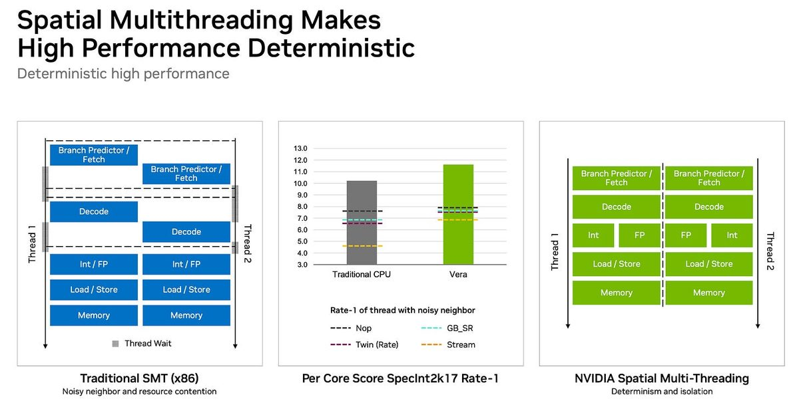
他们采用了一种非传统SMT（同步多线程）的多线程方式，称为空间多线程。空间意味着核心上的2个线程获得物理上独立的资源而非共享资源，因此任何线程都不会阻塞其邻居。这使得性能具有确定性。在他们的SPECint图表中，传统x86核心的吞吐量会因嘈杂的邻居线程而剧烈波动，而Vera则保持在狭窄区间内。对于串行智能体链（最慢的步骤决定整体），可预测性优于平均速度快。
传统SMT在统计上更高效，因为停滞的线程会将其整个核心让给相邻线程。空间划分以聚合吞吐换取隔离性，而复制的前端则额外消耗芯片面积。Vera拥有88个核心，而EPYC和Graviton5则达到192个。LPDDR5X内存每瓦带宽是DDR5的5倍，但它是焊接式的，这意味着与插槽式DIMM相比容量受限且可维护性较差。该规格表从未展示每插槽的SPECrate吞吐量，而这正是云经济所依赖的指标。我认为Vera只有作为与NVIDIA机架协同设计的编排处理器才有意义，从这个角度看，其设计是连贯的。
MONAKA是富士通的144核Arm服务器芯片（每个双插槽节点288核），面向绿色数据中心计算，现已提供样品，将于2027年出货，其有趣之处在于构建方式。其核心卖点并非全部使用2nm工艺：核心位于台积电N2P芯片上，而所有SRAM末级缓存和所有I/O则位于下方的5nm芯片上，通过混合键合连接，发热的核心芯片置于顶部，便于散热器接触。
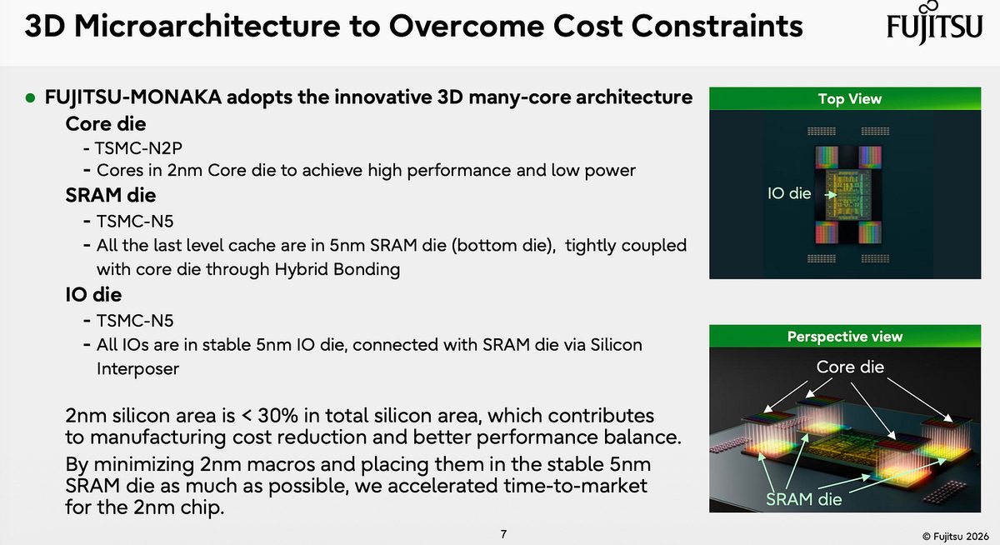
这优化了成本和功耗，并且行之有效：SRAM和模拟电路在5nm以下几乎不再缩小，因此为其支付2nm晶圆价格毫无意义。MONAKA总硅片中只有不到30%采用领先工艺。他们还将电压调节器放置在5nm SRAM芯片上，直接位于最热的计算模块下方，从而实现每核心电压控制及其超低电压技术（在标称电压以下30%运行，功耗减半）。将核心芯片置于芯片相对两侧确实引发了核间延迟问题，而该演讲并未真正解答。
Arm首次制造芯片，而不仅仅是授权IP。此前，你可以使用其Neoverse核心进行自主设计，而现在他们利用自有IP制造自己的成品CPU，Meta为主要客户。该芯片本身在通过UCIe连接的两个小芯片上运行多达136个Neoverse V3核心，采用台积电N3P工艺，配备12通道DDR5-8800，提供845 GB/s带宽和高达6TB容量，96条PCIe Gen6通道，功耗300W。
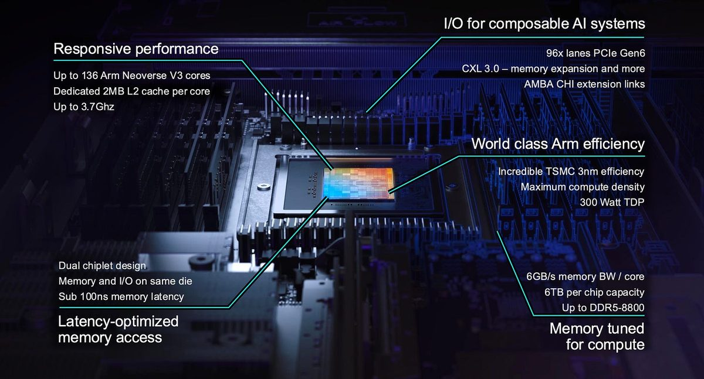
该设计不像Intel和NVIDIA那样对市场有强烈主张。标准核心、标准DIMM、适中功耗，无任何特殊之处。300W功耗范围是唯一差异化因素，每核心2.2W，而x86阵营为400-500W插槽，在功耗受限的数据中心中，这是一个合理的卖点。我认为更重要的是他们首先在制造芯片，而且从Ampere到超大规模云厂商CPU团队的所有Arm授权商现在都在与其自有IP供应商竞争。
Intel下一代Xeon是一份采用扇出架构的规格表，其规格极为激进。其结构是一组计算模块围绕中央I/O和内存架构中心，核心小芯片混合键合在承载缓存的基底芯片之上。
其可扩展性极强，因为可以在单个芯片上添加更多计算模块，结果是1.28GB末级缓存、256个核心和512个线程，由16通道DDR5供数据，使用MRDIMM时可达1.6 TB/s，外加128条PCIe Gen6通道。
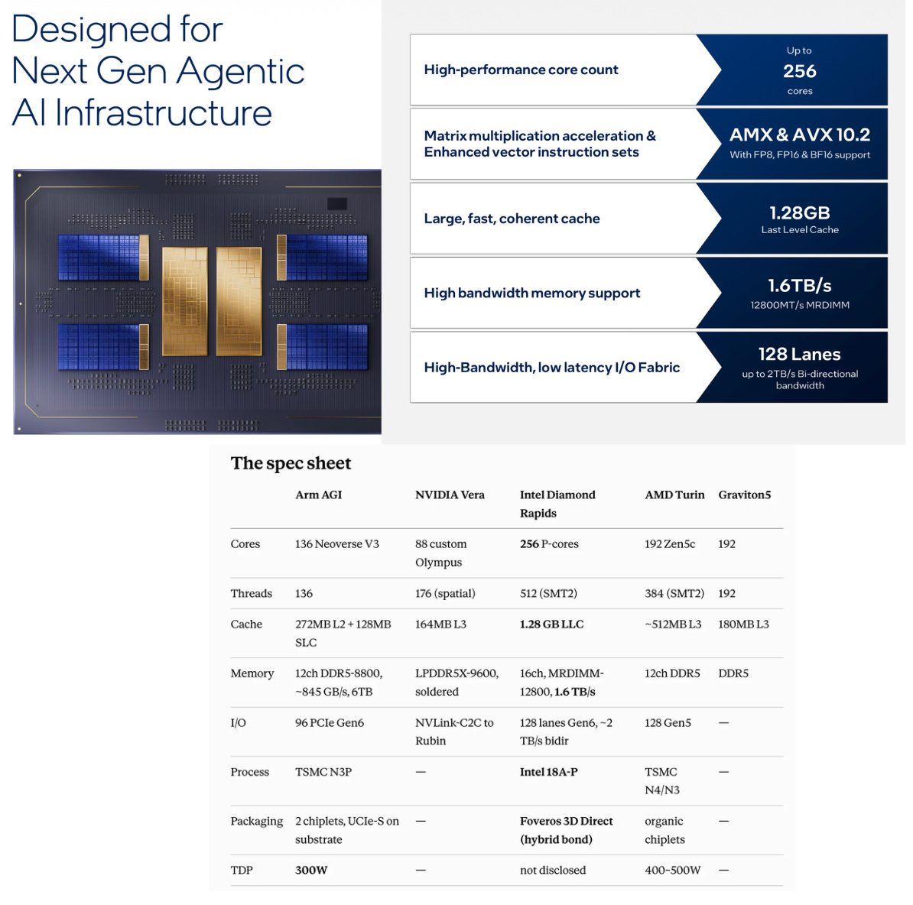
这是Vera（88核）核心数的3倍，也超过EPYC和Graviton5（各192核）。缓存方面，每核心LLC为5MB，而Arm AGI为2.9MB，Vera为1.9MB，Graviton5为0.94MB。该芯片与Vera截然相反，Intel对市场有自己的强烈主张。他们从未宣称不同的工作负载；同样面向Agentic（智能体原生）场景。他们只是强调不同的规格：NVIDIA主张Agent（智能体）需要每核心低延迟，而Intel则认为Agent（智能体）需要巨大缓存来保存其工作状态，并以最大聚合吞吐同时服务众多Agent（智能体）。该规格表从未展示TDP、频率或任何竞争性基准测试。
芯片的每个部分均为英特尔制造，包括18A-P工艺与Foveros Direct 3D封装。物料清单中完全没有台积电的身影。
对于主机CPU的定位，各家厂商意见不一。NVIDIA称其为延迟设备，拥有88个确定性核心；英特尔则持相反观点，认为它是吞吐设备，配备256个核心和1.28GB缓存。Arm将其视为300W的通用产品，富士通认为这是封装问题，IBM则视之为生态系统问题。十年来，服务器CPU形态趋于统一，而Agentic（智能体原生）工作负载打破了这一共识，因为目前无人确知Agent（智能体）的瓶颈究竟在于单线程延迟、缓存容量、核心数量还是功耗。
GPU的讨论在Blackwell时代就已超越GPU本身，今年更是成为定局：NVIDIA和AMD均展示了机架级产品，而英特尔仅展示了单卡，原因在于其尚无法提供机架级方案。所有图表中的计量单位均为72-GPU扩展域（即紧密互联、可视为单个大型加速器的GPU集合），所有图表的坐标轴均为吞吐-交互性曲线（一端为低成本token，另一端为高速token），各厂商的差异体现在其在该曲线上的定位选择。
Rubin相较于Blackwell的性能提升，在高交互性（快速token）端比高吞吐端更为显著：在其DeepSeek Agentic（智能体原生）基准测试中，低交互性下每MW吞吐提升2倍，高交互性下提升30倍。一年内我们将看到更快的token速度。
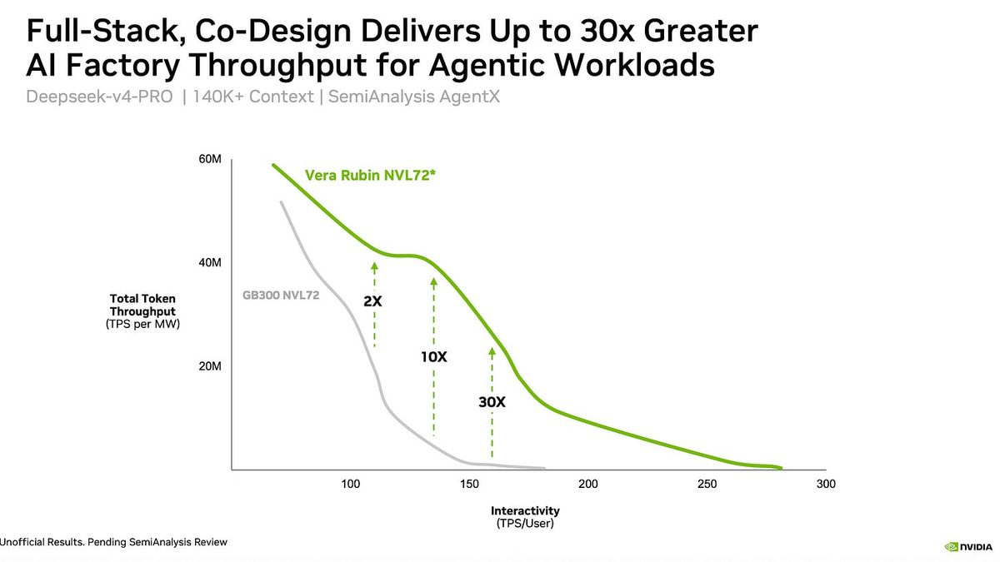
30倍这一数字体现了整体战略。由于平台现在专门针对解码速度进行优化，且部分优化措施已超出GPU范畴，因此曲线右移时增益随之增大。Groq LPX（NVIDIA收购了Groq，LPU也获得了专门介绍）将解码过程解耦并加速。当瓶颈为内存带宽且目标是速度时，SRAM便是解决方案。
「无人使用单芯片」是本次讨论的框架，我对此表示认同。平台现已横跨5个机架中的7种芯片，以Rubin NVL72为基础，Groq LPX扩展交互性，Vera处理工具调用，BlueField-4负责上下文存储，Spectrum-X实现横向扩展。
在硅片层面，最引人注目的特性是自适应稀疏性。量化（每个模型权重分配的比特数，如FP16、FP8、FP4）与硬件紧密相关，需硬件提供支持。他们跨代推进了FP16到FP8再到FP4的演进，但FP2过于激进，会导致模型质量崩溃。因此他们转而采用横向策略：对模型进行处理，丢弃接近零的值以将体积减半，并用元数据替代这些值，告知硬件空洞的位置。NVFP4是FP4的温和版本，质量介于FP8与FP4之间，稀疏性在此基础上实现。他们还实现了稀疏注意力，即仅关注关键token而非上下文中的全部token，Rubin原生支持此功能。这两项特性的共同模式是：以往存在于软件中的推理优化技巧，现已固化到硬件代际中。
NVLink是NVIDIA的重要护城河，扩展域的规模直接决定经济效益。大型扩展域使机架能够通过专家并行在高吞吐（低成本token）端占据优势。更大的域意味着MoE模型的专家可分布在更多GPU上，每个GPU每token读取的权重字节数更少，聚合内存可容纳更大批次。这与Groq LPX恰好位于曲线的两端，而平台现已同时覆盖两端。
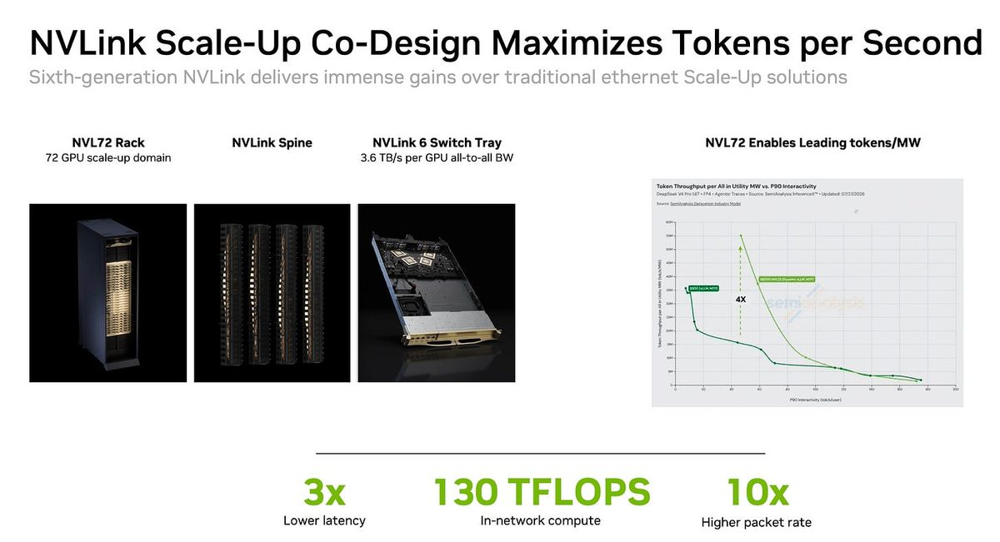
该机架的部分特性：暂无光模块，800VDC电源搭配sidecar，线缆最小化，无chillers的45C液冷，以及通过储能实现功率平滑，将峰值功耗削减13%。
AMD自研了72-GPU机架，从已公布的规格来看，其竞争力不容小觑。Helios基于MI455X加速器构建，在几乎所有已公布的规格上均与NVIDIA VR200 NVL72持平或胜出。FP4 FLOPS和纵向扩展带宽持平，其余指标AMD全面领先。
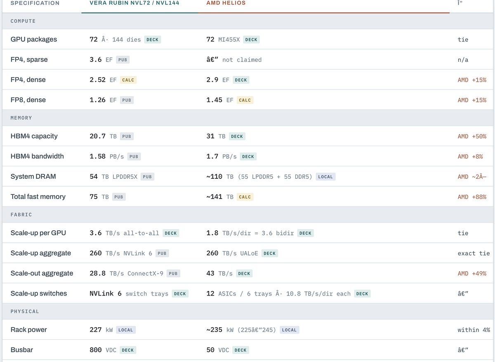
AMD在内存容量（每机架31TB HBM4，对比21TB）和横向扩展带宽（43 TB/s，对比28.8）上优势尤为明显。两款机架功耗几乎相同，因此从技术上来说，每MW性能密度更高。这正是市场期待已久的AMD追赶之势。MI455X集成12组HBM4堆栈，总容量432GB，带宽23.3 TB/s，采用12个chiplet架构，计算die基于N2制程，其余部分采用N3P，封装技术为CoWoS-L（台积电先进封装，本身也是受限输入之一）。
NVIDIA拥有而AMD尚不具备的是NVLink，这是一个与其所有GPU协同设计的协议，且刻意不设为开放标准。在进行全对全集合通信（每个GPU同时与其他所有GPU交换数据）时，系统速度取决于最慢的参与者，因此必须削减尾部延迟。AMD的UALink-over-Ethernet方案在商用Broadcom交换机上实现了同样的260 TB/s聚合带宽。难点在于负载下的尾部延迟，而两家厂商均未公布该数据。CUDA几乎未被提及，因为NVIDIA已无需在软件层面进行论证。
NVIDIA纯粹聚焦于系统级性能，而AMD的幻灯片则是一张庞大的规格表，这一差异正是竞争格局的写照。作为市场领导者，NVIDIA拥有围绕其协同设计的所有模型和软件，因此可以倚仗成熟度，以系统级成果示人。AMD迎头赶上的唯一途径是在纯规格上取胜，值得肯定的是，其演示文稿也展示了实测数据（20 TB/s解码带宽、实测纵向扩展、实测横向扩展），而非仅有峰值指标。
系统演讲展示了pod架构：每个tray包含4个GPU和1个EPYC Venice，跨6个tray连接至多达12个纵向扩展交换ASIC，若链路、交换机或整个交换机tray发生故障，可实现优雅降级。
他们表示，下一代产品将转向光互连，时间节点与Rubin Ultra一致。AMD尚未采用800VDC，且其机架为双宽设计，而NVIDIA为单宽。
这是Intel对数据中心GPU的新一次尝试，其设计打破了该品类的所有常规：无HBM、风冷、PCIe纵向扩展。该卡功耗350W，最高搭载480GB LPDDR5X（Intel自家显卡配备160GB，合作伙伴可扩展至480GB），基于Xe3P图形IP构建，支持MX格式数据类型。
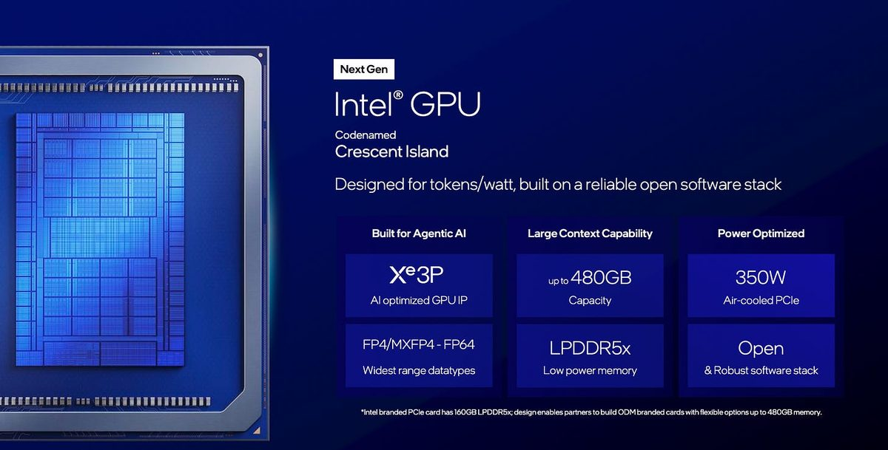
显而易见的问题是，谁会使用这个。它看起来对成本敏感、延迟不敏感的工作有用，但为此你需要激进地批处理，而要激进地批处理，你需要一个大的纵向扩展域，而PCIe无法提供这一点。也许本地和小型企业的私有工作负载适用。使设计连贯一致的答案是prefill。仅将其用于prefill，你几乎不需要内存带宽（prefill，即提示读取阶段，是计算密集型的），而480GB的廉价DRAM可以容纳巨大的上下文，是大机架部件每GPU HBM的两倍。将其与基于SRAM的解码部分配对，你就拥有了一个由避开短缺的部件组装而成的分离式推理对：无需HBM分配、无需CoWoS、无需液冷，也无需争夺台积电产能。
机架早已取代芯片成为产品，吞吐-交互性曲线也早已取代每芯片规格成为记分牌。每家供应商都选择了在曲线上的位置：NVIDIA捆绑了整个曲线。AMD攻击每兆瓦规格的中段，而Intel则处于不需要特殊组件的prefill角落。组件需求遵循同样的逻辑，因为机架是固定的兆瓦和美元预算，在HBM、互连、冷却和电源之间分配，而每家供应商都向你展示了不同的分配方案。
这些演讲中我反复回想的数字是Rubin的2倍对30倍的差距，因为它表明下一年的平台改进将不成比例地落在token速度而非token成本上。更快的token改变了产品体验，更好的体验推动了使用量，这就是需求反馈循环。更便宜的token改变了单位经济性，限制了每个token能承载的硬件量。两者都在发生，但供应商们正在为前者投入最大的工程努力。
网络获得了3个专门的演讲，它们共同表明AI网络不再是一回事。新词汇说明了这一点：机架内的纵向扩展，机架间的横向扩展，数据中心间的跨域扩展，以及现在的GPU与其周围服务之间的向内扩展。每一层都在成为自己的产品类别，拥有自己的物理特性，而每一层的斗争都是同样的斗争：专有协同设计对抗商用以太网。
Broadcom的NIC演讲是商用阵营的开场论证，我从中获得的收获超出了预期。网络接口卡（NIC）让GPU可以直接与横向扩展网络通信，无需经过CPU，使用远程直接内存访问（RDMA）直接从线上读写GPU HBM。这也是收发器插入的位置，这就是为什么我将每GPU的NIC数量作为光学器件指标来追踪。
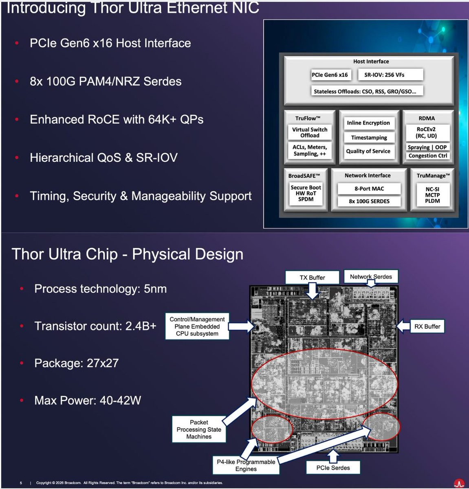
Thor Ultra是一款800G部件，基于PCIe Gen6，5nm工艺，功耗40-42W。该演示文稿的结构是一份忏悔清单，列出了旧以太网RDMA的错误之处，每一项现在都按照Ultra Ethernet Consortium（UEC）的规则手册进行了修复：无多路径变为跨最多8个网络平面的数据包喷洒，低效的go-back-N重传变为选择性重传，难以调优的拥塞控制变为可编程的、基于接收方信用的方案。乱序数据包放置是巧妙之处，因为喷洒的数据包乱序到达，NIC直接将它们写入最终的GPU内存位置，而不是缓冲后重新排序。他们在集合通信（训练中的全GPU通信操作）上的基准测试在2个节点上达到了线路速率的96%以上，如果我是他们，我会把这个数字作为主打。
DPU到底做什么？数据处理单元并不是一个很有描述性的名称；数据中心处理单元会更贴切。它是一个运行基础设施软件（网络、存储、安全）的CPU，与主CPU分离，使主CPU可以专注于操作系统和应用程序。它存在的更深层原因是信任：DPU是服务器前面的服务器，一个独立的处理器，拥有独立的操作系统，因此云运营商的控制平面和租户的代码永远不会共享硅片。
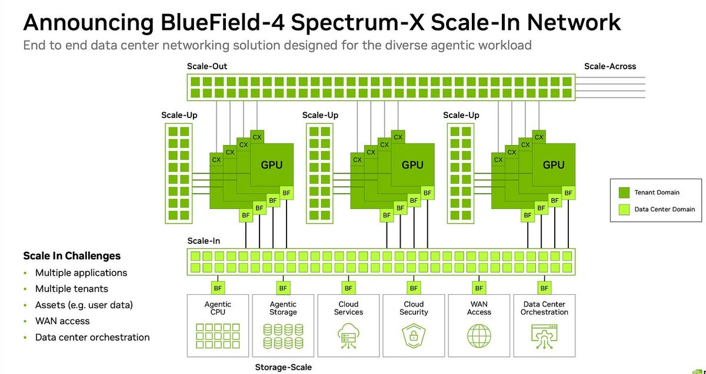
NVIDIA的框架在网络分类法中加入了向内扩展：纵向扩展、横向扩展和跨域扩展在不同距离上连接GPU，而向内扩展则将GPU连接到数据中心资源，如存储和安全服务。Agent（智能体）使这成为一个真实的流量类别，因为Agent在模型调用之间不断访问数据库、工具沙箱和上下文存储。
BlueField-4本身是单封装上的Grace CPU和ConnectX-9 NIC。AI DPU与传统云DPU的区别在于带宽：每个计算托盘7.2 Tb/s，而2021年云DPU为200 Gb/s。该演讲还产品化了5层KV缓存层级（活动上下文的GPU HBM、溢出的系统内存、热复用的本地NVMe、冷上下文的网络存储），由DPU编排，声称上下文存储能效提升5倍。
Spectrum-X是NVIDIA的以太网横向扩展方案，专为更高带宽和更低抖动（延迟方差）而设计，据演讲称，其采用率现已远超InfiniBand。多租户是指单一网络同时承载多个任务，Spectrum-X正是为此专门设计，在多任务环境中，其训练性能比现成以太网提升1.9倍。单任务差距仅为1.2倍，而这正是整个产品的价值所在：当邻居产生噪声时优势才显现，而在真实云环境中这种情况始终存在。
NVIDIA的光学部分回答了一个我经常被问到的问题。我们知道为什么纵向扩展需要CPO（共封装光学，将光学引擎从可插拔模块移到交换机封装本身），但为什么横向扩展（已经是光学的）也需要？答案是功耗。共封装消除了DSP（用于在交换机ASIC到面板的长铜线走线后清理信号的信号处理芯片）。NVIDIA的光子学数据是功耗降低5倍、激光器减少4倍、可靠性提升10倍，基于台积电COUPE工艺，已投入生产。他们还将光学器件规模定在AI工厂计算功耗的约10%，这是我见过的对光学行业最精准的TAM框架。
重头戏是多平面拓扑。传统横向扩展为每个GPU提供1个胖端口：一个102.4 Tb/s交换机配置为64个1.6T端口，每台交换机服务64个GPU。关键在于将同一交换机配置为512个200G端口，并为每个GPU提供8个薄端口接入8个独立网络平面。每个GPU保持相同的总带宽，而网络现在可扩展到512K GPU，增加64倍，因为2层网络规模随交换机基数（端口数）的平方增长。任何单链路故障现在只损失GPU带宽的1/8，而非全部。
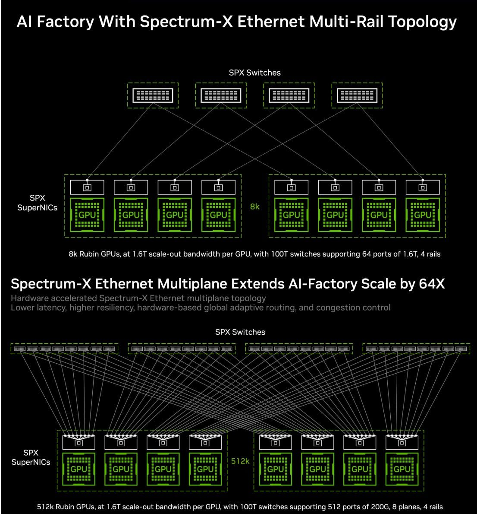
这带来了几个效果。首先，网络可靠性大幅提升，在导致现成以太网归零的故障中仍能保留90% 带宽，故障检测速度提升400倍。其次，所需交换机减少1.7倍，这对每GPU的光学器件数量不利，尽管它实现了千兆级集群，使光学器件绝对数量增长。
网络架构遵循与计算相同的路径：将通用事物分解为专用层，然后逐层竞争。NVIDIA在负载下的协同设计行为方面领先，商用阵营标准化每一代技术大约落后18个月。
组件层面的解读是，每GPU的网络密度在各层持续上升（每GPU一个NIC变为多个，每托盘一个DPU，每GPU 8个平面），而其中2项创新（多平面交换机缩减、CPO激光器缩减）在集群规模爆炸性增长端口数的同时削减了每端口内容。光学器件仍是数量驱动的故事，但面临组合逆风，而交换机和NIC硅片无论协议之争哪方胜出都是直接受益者。
最后一个主题是挑战者：2家初创公司、一家拥有十年硅片经验的大型云厂商，以及一家从未造过芯片的前沿实验室。4场演讲共享同一诊断：解码受内存带宽限制，通用GPU将其大部分带宽浪费在此。4场演讲也共享同一处方：SRAM靠近计算单元，加上针对低延迟优化的拓扑。分歧在于推进的程度。
Cerebras发布了CS-4，但这一发布并未引起太多关注。我认为这是一个失误。
CS-4从每系统1片晶圆升级为3片WSE-3 Turbo晶圆：750 PFLOPS（是CS-3的6倍）、132GB片上SRAM、129.6 PB/s内存带宽，并新增晶圆间直连，延迟低至2微秒。
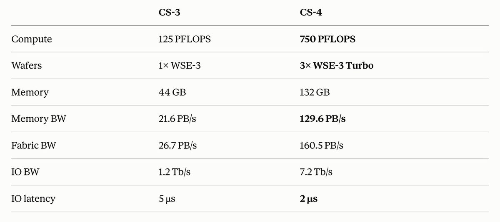
该架构是对带宽论最纯粹的押注：将整个模型保存在分布于晶圆上的SRAM中，带宽数字因此达到Rubin GPU HBM的6,000倍。代价是容量：132GB对比NVL72机架中的21TB：因此大型模型在晶圆间流水线处理时，仅有激活（模型层间流动的小型中间结果）跨越晶圆传输，在10T参数模型上每跳延迟低于0.2ms。这一取舍正是Cerebras占据吞吐-交互性曲线最右端的原因。
他们还发布了CS-6，将混合键合DRAM置于SRAM晶圆之上。巨大的内存带宽却几乎没有内存容量，这是Cerebras的全部局限，而CS-6正是消除这一局限的尝试。如果他们解决了将DRAM键合至晶圆所伴随的热问题，可寻址市场将彻底改变。
SambaNova认为解码是推理的瓶颈，而HBM带宽是解码的瓶颈。GPU上的大部分HBM带宽都消耗在搬运既非权重也非KV缓存的数据上。他们围绕这一点构建了一个指标：模型带宽利用率（MBU），即峰值内存带宽中执行有用工作的比例：其测量结果显示GPU仅为5-25%，而SN50维持在44-51%。
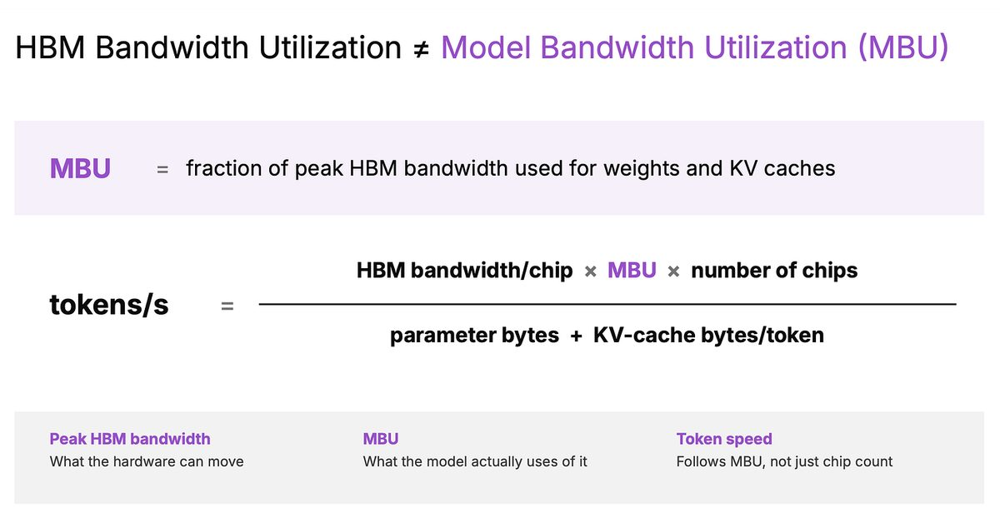
因此他们将SN50打造为解码专家：每芯片432MB片上SRAM、64GB HBM，并辅以提升MBU的软件与芯片设计技巧。两大关键：将整个模型编译为单个持久内核（无内核启动、无同步间隙、中间结果从不往返HBM），以及空间数据流（将算子图物理布局于芯片上并流式传输数据，而非对单个大引擎进行时间切片）。其扩展性主张是MBU随芯片数量增长保持平稳，从64到256芯片，每用户每秒200至500 tokens，而GPU利用率则随规模扩大而崩溃。
Google对TPU v8的改动是，在单一产品线上交替了十年之后，终于将训练与推理芯片分开，分别推出TPU 8t和TPU 8i。
推理芯片在每单位算力上配备更多HBM带宽，因为解码受带宽限制。8i还搭载了大量SRAM（384MB，是上一代的2.4倍），以及12层堆叠的288GB HBM3E。他们的SRAM对比HBM表格为整个定制芯片故事提供了数据支撑：带宽提升15-20倍，延迟降低100倍，每比特能效提升10-20倍。
网络拓扑是另一项变化。8i采用了一种名为BoardFly的新布局，每个pod包含1,152颗芯片，任意两颗芯片之间最多7跳，而旧的3D环形拓扑中为16跳。减少跳数的意义在于降低延迟，因为MoE全对全通信受网络延迟制约。他们还将集合通信操作直接集成到互连芯片中，进一步削减了5倍延迟。
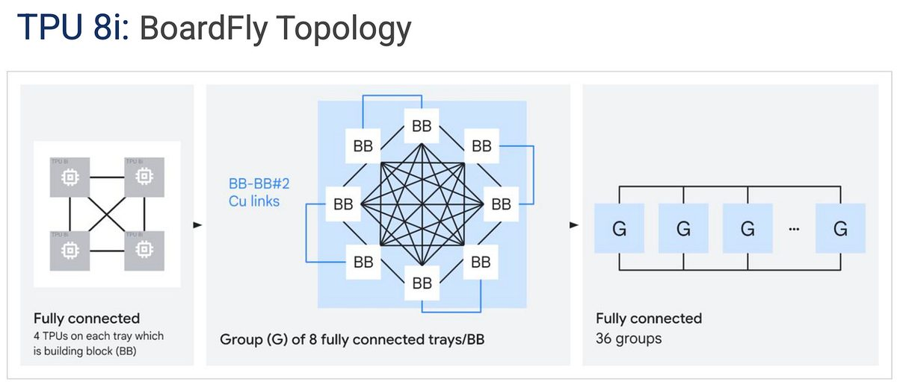
训练场景需要的是对分带宽（将网络切成两半时中间部分的带宽），因此3D环形拓扑得以保留，并大量采用光路交换（OCS）。训练需要极高的FLOPS和巨大的共享内存：8t超级pod由9,600颗芯片组成，共享2PB的HBM，算力达121 exaflops，任意切片大小均可通过OCS层按需划分，这是Google的典型做法。
OpenAI以Jalapeño结束了大会，这是其在第二天上午发布的推理芯片。
该芯片由一支极小的团队在9个月内完成流片，他们最先提到的一点是内部AI系统协助了芯片开发。团队中几乎没有传统的芯片设计经验。芯片本身：一个计算die搭配I/O chiplet和6组HBM4堆栈，每颗芯片216GB、带宽15.4 TB/s，功耗700W，专为OpenAI的推理工作负载设计。其设计围绕推测解码展开，即使用一个廉价的草稿模型预测多个后续token，再由主模型在一次批量前向中校验，将8次串行主干前向压缩为1次。
该芯片同时面向预填充和解码阶段，兼顾吞吐与交互性，力求在各维度都处于Pareto前沿。其基准测试在方式上具有针对性：基于公开的SemiAnalysis InferenceX套件进行功率归一化对比，测试模型从未与芯片协同设计，且Jalapeño仅运行普通单token预测，而GPU基线允许使用推测解码。即便如此，他们仍宣称处于前沿：在DeepSeek R1上，每kW的token数比GB300高1.7倍，延迟低3.6倍，这对首版硅片而言是相当出色的成绩。高交互性场景下的提升远大于高吞吐场景，这与今年其他厂商的形态一致。
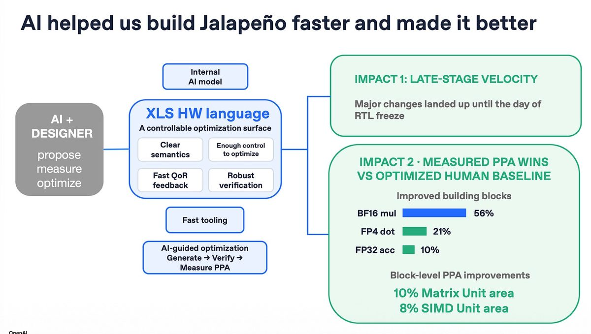
一个机架容纳128颗Jalapeño，聚合内存带宽超过1 PB/s，与VR200 NVL72处于同一量级，网络采用Broadcom Tomahawk 6。不过，他们最明智之处在于流程而非芯片本身。
团队保持精简以便快速迭代。更重要的是，他们构建了一种新的硬件描述语言，精神上与Rust类似，设计目标就是让AI能直接写出正确代码，并在设计上运行内部AI优化系统，从功能正确一路优化到超越专家水平。从RTL冻结到流片仅用9个月，从首版硅片到服务ChatGPT仅用10周，第二代已接近流片。
挑战者过去是各种互不兼容的押注，而今年它们趋于一致：大容量SRAM、低跳数拓扑、解码专用化，以及预先选定吞吐-交互曲线上的位置。这种趋同意味着架构之争正在尘埃落定，竞争焦点转向制造产能、软件成熟度和资本。在这场竞争中，背靠超大规模云厂商资产负债表的一方（TPU、Jalapeño和被收购的Groq）比面向同一市场的独立厂商更具优势。
我对Hot Chips 2026的四大核心结论。
当前存储层正涌现大量创新，原因在于价格。存储厂商在HBM级产品上获取约90% 的毛利率，即成本加成10倍，这是经典经济学：当存在如此高的加成时，资本力量会合力将其摧毁并缓解短缺。这在商学院宏观层面说来容易，但缩小到微观层面观察这一过程的某个具体环节则完全是另一回事。本次会议正是这一环节的缩影：Samsung在基础die中集成逻辑，d-Matrix在DRAM上堆叠计算，SanDisk阵营的HBF像HBM一样堆叠NAND，Samsung再次在LPDDR bank内加入逻辑，XCENA在CXL扩展器上做计算，Cerebras将DRAM键合到晶圆上，以及每个加速器厂商在负载允许的情况下用SRAM替代HBM。市场上听到的所有HBM降规格讨论，本质上是同一力量穿上了供应链的外衣：买家重新设计系统，使每个token所需的高价部件更少。
这些创新都无法及时打破当前周期，因为全部距离量产还需2-4年，且其中几条路径（HBF、HBM4基础die）在过程中每bit反而消耗更多晶圆。因此近期短缺仍将持续。中期教训是：加成是租来的，而这笔租金正同时受到来自6个方向的争夺。存储厂商深知这一点，这正是Samsung在大会上全力攀登价值链、赶在商品化层被套利之前行动的原因。
第二个反复出现的主题：推理正被拆解为多个阶段，每个阶段获得专属硬件。高层面上，prefill和decode分离，因为prefill受计算限制而decode受内存带宽限制，两者运行在同一GPU上会浪费其中一种资源。Intel专门为prefill侧构建了Crescent Island。SambaNova、Groq、Cerebras和d-Matrix专门为decode侧构建。NVIDIA在其平台内部将这一拆分产品化，由LPX起草token、Rubin验证，BlueField在底层对KV cache分层。再低一层，同一把刀再次切割：attention卸载到近内存设备（XCENA演示），专家分布在廉价大容量内存上（HBF场景），投机解码拆分token循环本身（Jalapeño的整个设计核心）。
几乎每份演示文稿中都能看到吞吐-交互性曲线，这种重复本身就是信号。不成熟的行业曾构建最大化通用的芯片，因为没人知道负载将如何演变；如今负载已清晰可辨，所有人都在拆解通用方案并逐一优化每个部分。工程权衡是叠加性的：解聚后相同的硬件资源可服务显著更多的token，因为每个阶段运行在为其定制的硅片上。
若假设芯片和内存随token需求按比例扩展，解聚则打破了这一假设，因为行业正在积极寻求用更少的单位资源服务更多token。如此大的效率提升通常通过Jevons动力学化解：更便宜更快的token创造超比例的token需求：在以往每次效率跃升中这都是正确的押注。但即使总量增长，需求构成也在变化：decode专用硅片搭配不同的内存（更多SRAM，有时无HBM），prefill层用廉价LPDDR替代HBM，KV cache沿存储层级向NAND迁移。
OpenAI的演讲我认为是大会最重要的30分钟，主要原因与Jalapeño芯片无关。演讲展示了一个几乎没有硅片资深人士的小团队、一种自定义的AI友好硬件语言、一个内部AI优化循环，以及9个月从RTL到流片，最终拿出一款可信地宣称在功耗归一化推理上超越现有产品的芯片。芯片设计40年来一直由少数公司内部稀缺人才的积累所守护。它恰好也是AI近乎理想的领域：完全数字化、仿真丰富、每一步都可验证，因此AI可以像在大多数工程领域无法做到的那样自我检查。
长期来看，这对任何护城河是设计人才和迭代速度而非生态系统锁定（ecosystem lock-in）的无晶圆厂芯片设计公司都相当不利。这感觉像是芯片设计应有的方式。在软件领域，一个拥有2000名工程师的巨头恰恰会被拥有合适工具链的小型AI原生团队以零头时间交付同等产品所颠覆，半导体设计或许也相差无几。巨头今天拥有人才，但人才可以被挖走，工具链可以被复制。能在这场变革中存活的护城河是AI无法压缩的：制造获取与配额、已安装的软件生态系统、客户关系以及晶圆厂。这大致就是NVIDIA真正的护城河组合（CUDA、NVLink、供应链关系）。中端ASIC厂商几乎一样都不占，其全部价值主张（设计执行即服务）恰恰是刚变便宜的东西。EDA是二阶问题：设计启动数量上升，而单席位价值正被实验室为自身构建的工具所争夺。
第四个结论是我从4个互不相关的演讲中拼凑出来的：领先制程晶圆正成为一种稀缺资源，仅保留给真正受益的晶体管，其余部分则分配到落后节点并通过先进封装重新整合。富士通将MONAKA不到30%的硅片放在N2上，SRAM和I/O则采用5nm，因为SRAM和模拟电路已停止微缩。AMD对MI455X也采取了同样做法，计算芯片用N2，其余部分用N3P。三星整个定制HBM方案的核心是将基底芯片移至任何能发挥价值的节点，而英特尔则将Wildcat Lake的成本优势建立在有机封装和尺寸合适的芯片上。没有人将此作为共同论点提出，但它确实是一个共同趋势。
因此，这可能意味着每颗芯片的领先制程晶圆需求增长速度远低于晶体管数量所暗示的水平，而封装密度（混合键合、芯片间接口、基板）的增长速度则快得多。这对封装和键合工具链以及落后节点的产能利用率而言，结构上是利好。
参考：https://x.com/jasonschips/status/2095084434185924625